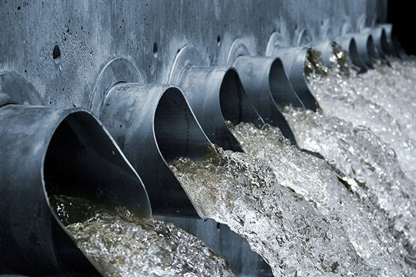

Treat wastewater today to protect nature, reduce pollution, and create a cleaner future for everyone.

Waste water is used water from homes, industries, agriculture, and hospitals that may contain chemicals, detergents, pollutants, and harmful waste materials.
Recycling and treating wastewater helps save freshwater, reduce pollution, and support a healthier environment.
Wastewater is produced by homes, farms, factories, schools, and industries.
Domestic Wastewater
Industrial Wastewater
Agricultural Wastewater
Stormwater Runoff
Reusing water protects rivers, reduces water scarcity, and supports sustainable living.
Water waste lowers river levels, damages ecosystems, increases energy use, and contributes to climate change.
Limited clean water affects hygiene, sanitation, food safety, and public health.
Polluted water from homes, factories, and farms may contain chemicals, sewage, oils, and pesticides.